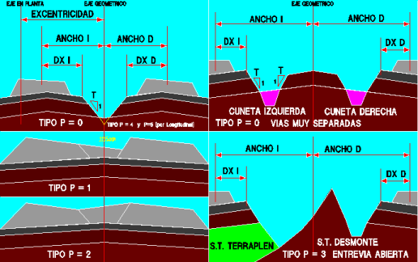
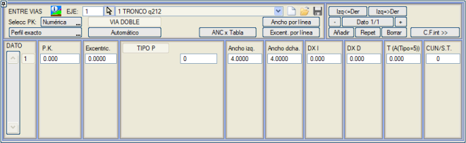
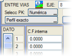

| |
|
EKSANTRİSİTE VE HAT ARALIĞI
|
Bu menüde, geometrik eksenin plan eksenine göre eksantrisitesini (Eksant. alanı) ve hat merkezleri arasındaki mesafe olarak hat aralığını tanımlayan veriler girilir; bu mesafe sol hattın merkezinden (Genişlik sol) ve sağ hattın merkezinden (Genişlik sağ) geometrik merkeze olan mesafedir. 

Hat aralığını tanımlamak için program çeşitli geometri tiplerini ayırt eder:
Hendek,
tanımlandığı tip kesit numarasıyla veya hendek yoksa 0 değeriyle
belirtilir. İki hendek arasındaki iç bölgede koruyucu tabaka korunur.
Hatlar çok ayrık olduğunda (istasyon bölgeleri vb.), subbalast + koruyucu tabaka paketinin ayağından terasmana başlayan ve aynı parametrelerle tanımlanan, her iç tarafta birer hendek oluşturmak mümkündür. Bu durumda, ayrıca iç koruyucu tabaka için hatların altındaki genel koruyucu tabakadan farklı bir kalınlık tanımlamak da mümkündür. Bunun için [İç K.T. >>] düğmesine basılır ve diyalog kutusu iç koruyucu tabaka için değerler girilebilecek şekilde değişir. Eğer negatif bir değer girilirse, iç koruyucu tabakaya genel koruyucu tabaka ile aynı kalınlık atanır. Eğer iki KM'de farklı bir değer verilirse, ara değerler enterpole edilir. Ayrıca, menünün bu kısmında iç bölge için aşağıdaki tanımlama olanakları belirlenir:
Gabari nedeniyle hat aralığı ek genişlikleri ISTRAM®/ISPOL® kütüphanesinde, galiboTB.tsa ve galiboTM.tsa tabloları mevcuttur ve [ANC x Tablo] seçeneği ile hat aralığına tabloya göre ek genişlikler vermek için kullanılabilir. galiboTM.tsa tablosu, Murcia tramvayı için hesaplanmıştır ve Bilbao tramvayına karşılık gelen galiboTB.tsa'ya benzerdir. Ayrıca, geçişin başlangıç ve bitiş noktalarında bir geri çekilme ile ek genişlikleri uygulayan bir tablo da mevcuttur. Bu tablonun adı GaliboRT.tsa'dır ve Platform menüsünde daha önce bahsedilmiştir. Sağa kurplarda, dış ek genişlik sağ hat aralığına ve iç ek genişlik sol hat aralığına uygulanır; sola kurplar için ise iç ek genişlik sağ hat aralığına ve dış ek genişlik sol hat aralığına uygulanır. Her iki tabloda da, Exc komutu kullanılır, bu da her hattın gerçek yarıçapını, plan eksenine göre eksantrisiteyi ve hat aralığı genişliklerini dikkate alarak kullanmaya olanak tanır. ISTRAM®/ISPOL® kütüphanesinde bulunan bir diğer tablo da Galibo_Peralte.tsa'dır ve hat aralığı genişliklerinde ve Platform menüsündeki tabloya göre A2 genişliği için kullanılır. Bu tablodan yola çıkarak iç ve dış ek genişlikler, yarıçap yerine mm cinsinden devere bağlı olarak uygulanır. Sağa kurplarda, devere bağlı ek genişlik hattın sol yarı genişliğine uygulanır ve tersi durumda tam tersi. |